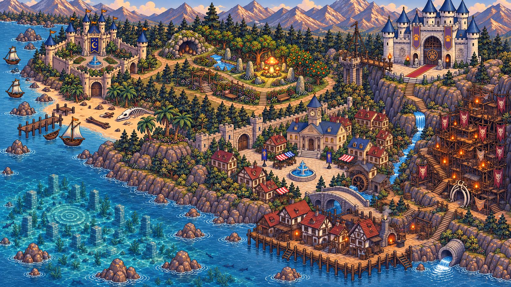
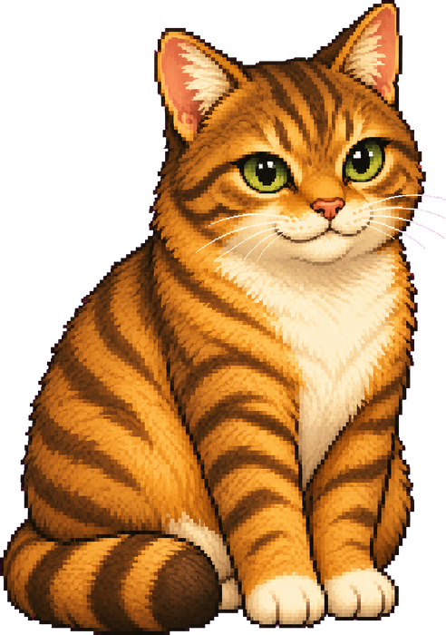
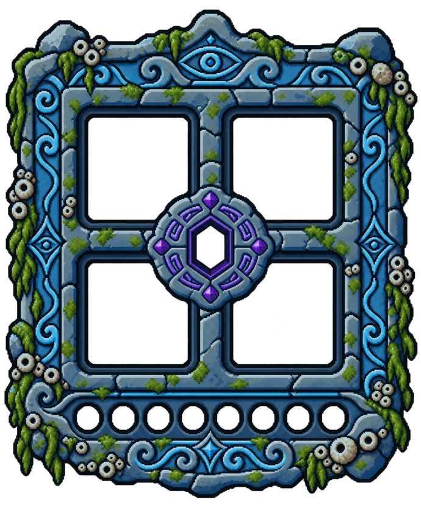
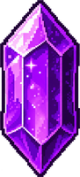
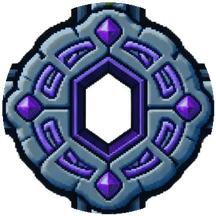
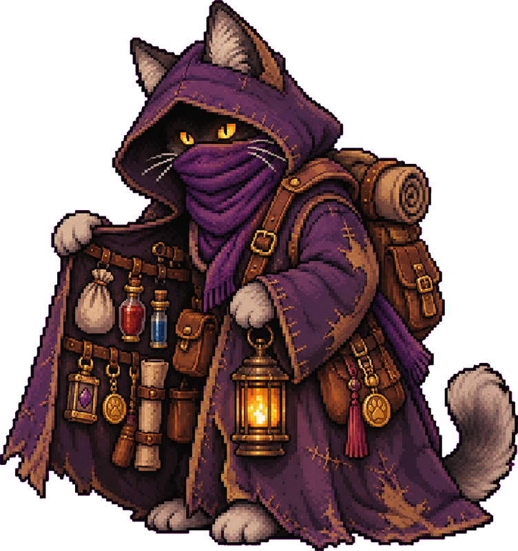
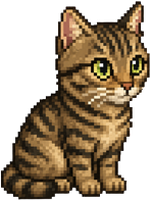

Garden
YOU FAINTED
◀
▶
▲
▼
◀
▶
⤒
F
E
1
2
3
4
Q
Z
Press E to talk to a friend
tap to continue
Life of PuiutuMade by ANW

◆ Current objective
YouObjectiveDiscovered!Quest
What’s your name?
Your name appears above your cat, for your friends.
Tomy
tap to continue
Store

Potions
Anvil
Charms
Tricks
Talk
Leave
Market
--:--
—
Settings
Language
Game mode
Profile
Inventory
Mine-Cart Escape
Fruit Merge
0·Best 0
Make: Apple
Color Sort
Level 1 / 10
Sealed Portal
Watch the ancient runes…



Tablet
Crystal Array
Light every shard
Tap a shard to flip it and its neighbours. Light them all.
Power Conduit
Reroute the conduit — power all 3 sockets.
Tap a pipe to rotate it. Connect the source to all 3 sockets.
CIRCUIT LAYOUT (dev)
Sigil Lock
Turn the plate until the crest matches.
Each brass knob turns the four tiles around it a quarter turn.

Herbs
Rarities
Leave

Shelves
Trade
Notes
Leave
Lucky Capsule
0 · 0 · 0
???
Turn the crank for a surprise!
Fisher's Barrel

Fishing Log
Fishing
caught: 0·biggest: —
↑ / ↓ move the bar — keep it on the fish · tap when it bites
▲
▼

Inamic
PuiutuLv.1
…
LEVEL UP!
Level 2